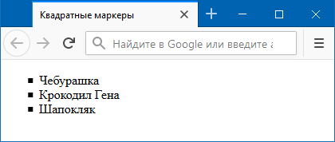
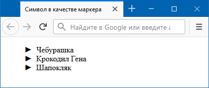

Как изменить вид маркера списка?
С помощью CSS допускается устанавливать один из трёх типов маркеров: disc (точка), circle (кружок), square (квадратик). Добавлять эти значения нужно к стилевому свойству list-style-type, которое указывается для селектора ul или li (пример 1).
Пример 1. Стандартные маркеры
<!DOCTYPE html>
<html>
<head>
<meta charset="utf-8">
<title>Квадратные маркеры</title>
<style>
ul {
list-style-type: square; /* Квадратные маркеры */
}
</style>
</head>
<body>
<ul>
<li>Чебурашка</li>
<li>Крокодил Гена</li>
<li>Шапокляк</li>
</ul>
</body>
</html>В данном примере в качестве маркеров используется квадратик (рис. 1).

Рис. 1. Вид маркеров
Выбор и установка собственного символа маркера происходит через псевдоэлемент ::before. Вначале следует вообще убрать маркеры у списка, присвоив значение none стилевому свойству list-style-type, а затем добавить псевдоэлемент ::before к селектору li. Сам вывод символа осуществляется с помощью свойства content, в качестве значения которого и выступает желаемый символ (пример 2).
Пример 2. Использование ::before и content
<!DOCTYPE html>
<html>
<head>
<meta charset="utf-8">
<title>Символ в качестве маркера</title>
<style>
li {
list-style-type: none; /* Убираем маркеры у списка */
}
li::before {
content: "►"; /* Маркер списка */
padding-right: 0.5em; /* Расстояние от маркера до текста */
}
</style>
</head>
<body>
<ul>
<li>Чебурашка</li>
<li>Крокодил Гена</li>
<li>Шапокляк</li>
</ul>
</body>
</html>В данном примере маркер, установленный по умолчанию, прячется, а взамен добавляется символ (рис. 2).

Рис. 2. Маркеры в виде символа
Чтобы выбрать в качестве маркера какой-нибудь хитрый символ, можно воспользоваться программой Microsoft Word или таблицей символов, это стандартная программа, входящая в комплект Windows. Кодировка кода должна быть обязательно UTF-8.